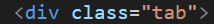

CSS
| CSS Features | Explanation |
|---|---|
| CSS Styling | CSS styling is where you put css under the "Style" tag which is under the "Head" tag.
This allows you to apply styles to your html code to make it look pretty
|
| Selectors | In CSS there are selectors. Selectors such as Class and Id
These allow you to apply separate styles to code without affecting the whole thing. Id
has the highest priority as a selector therefore its style can overwrite any other style using a different selector.

|
| Separate CSS style | You can implement CSS styling such as water css which applies a style to your program which makes it more appealing when loaded into a browser. |
| Inline CSS | Inline CSS is when css is Outside the style tag. DO NOT DO THIS! Dan will be unhappy. |
| Animations | CSS code can be used to apply animations to text so it can change colours |
HTML
| HTML Features | Explanation |
|---|---|
| Tags | Tags are the building blocks of HTML they have to be opened and closed
using < >. Anything from the start of the tag to the end of the end tag is an element
 |
| Links | Links In HTML can be used to redirect who clicks it to somewhere else. This can be done by providing a URL as well as the correct code. |
| Attributes & Values | Attributes is code that goes inside the tag which can be used in a few ways. For an example, it can be used to declare a class attribute. And Values are anything that goes inside speech marks.  |
Command Line
| Command Line Features | Explanation |
|---|---|
| Make a Directory | md foldername |
| Remove a Directory | rd foldername |
| Make a File | echo (anything put here goes into the file)> filename |
| Delete a File | del filename |
| Opening a file | notepad filename (notepad)
code filename (vs) |
| Listing Folders and Files | dir (directory) |
| Copying files to folder | copy filename foldername |
| Navigate directory | cd foldername (nav to specific folder)
cd.. (go back a directory) |
Batch Files
| Batch Features | Explanation |
|---|---|
| @echo | @Echo off stops code being displayed as text to the user |
| Operators | EQU (equal to)
NEQ (not equal to) LSS (less than) LEQ (less than or equal to) GTR (greater than) GEQ (greater than or equal to) |
| Asking user for input | This can be done by declaring a variable a name and inputting valid text. |
| Calling a users input | This can be done by typing out the variable name surrounded by % |
Git
| Git Features | Explanation |
|---|---|
| Git push | Git push pushes all changes from your local machine to the git repository |
| Git pull | Git pull pulls all changes made from the git repository to your local machine |
| Git add . | Git add . (Adds files to repository) |
| Git commit -m "" | Git commit -m "any message" records any changes in the repository |
| Git init -b main | This creates a repository in the folder this command is ran in through the CLI |
GO
| GO Features | Explanation |
|---|---|
| If/Else statements | IF/Else statements are conditional. IF means it will
execute a piece of code if a certain condition is met e.g true.
and Else would be executed if that condition is not met.

|
| Declaring a Variable | Declaring a variable in go requires you to
declare that something is going to be a variable VAR
Declare a Name for the variable INPUT
Then finally declare the type the variable is going to be STRING

|
| Short assignment operator | Declaring a variable can also be done in a shorter way
by using ":=" When using this all that is needed is a name and a value
and this operator will auto assign to the type of the value
e.g "a:=1" would make "a" an interger.

|
| Functions | Functions store specific code which execute a certain task. Functions can be used to call code saving the time of writing it again. Functions include parameteres which can have values assigned to them. Functions can also include return types which tells what data type the value returned should be. Function is delcared by FUNC then followed by Nameoffunction(parameters string) return type |
| For Loops | A for loop is code that repeats itself [loops] untill a certain condition is met such as true. For an example, a for loop can be a series of If/esle statements and like them it has a true and false a for loop will make the If/esle statment keep repeating until the condition met is true. A foor loop can also made without using If/esle for an example when a loop is used to count up to a certain number. |
| Running go | Running go can be done in two ways. "Go run ." can be entered to run Go code thats location is currenntly open in the CLI. Go run filename.go can also be used to run go as well. |
| Go mod init | Go mod init is used to create a go.mod file which keeps track of all the dependecnies (building blocks of other code) that are needed to make the program run. For an example, in your program if you are printing text to the screen go.mod tells GO that you need to print. Go will then get the right version of the code you need. It helps go find the right code you need so you save time. Go.mod also stores the version of GO you are using. |
| Why doe we automate testing? | Testing code is great because it helps to make sure your code works without any erorrs It also helps to prevent errors of occuring in the future if regular testing is carried out. Automating testing of code Is also quicker as each piece of code dosen't have to be etsted individually it is also more effective as it helps to spot errors quikcer and some you may not notice. |